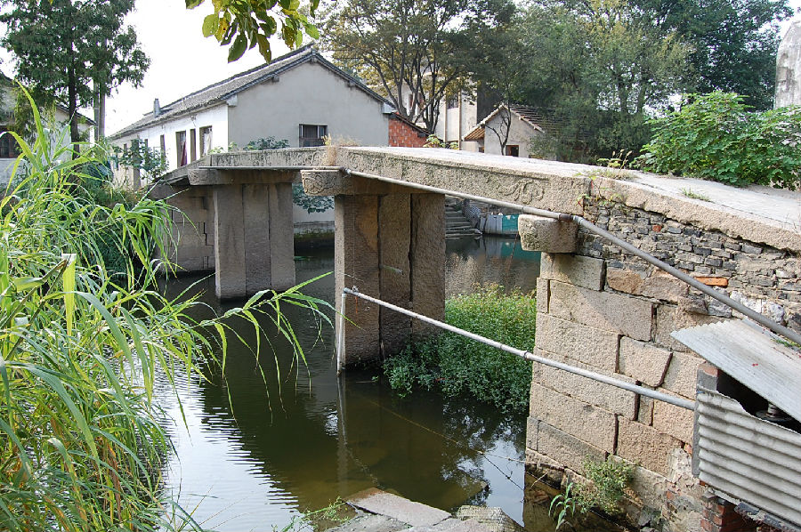

嘉兴市文物保护网 · 市级文物保护点 · 2020-11-03 · 原文

洛东村喜阶桥位于嘉兴市秀洲区新塍镇洛东村3组，从桥额小字知此桥建于清道光三年（1823）。系三孔梁式石板桥，东西横跨喜阶桥港。桥全长25米，宽1.7米，桥底距河面高度2.57米，桥面和桥柱均有3块石板组成，东西落坡各设石阶7级，桥额刻有“喜阶桥”，旁镌“道光三年”小字，桥身饰有卷草等纹，南北桥楹联为：“东亩西畴群利涉，南墙北楫自安流，共仰福禄歌有庆，咸思善建乐维新”。喜阶桥纪年明确，保存较好，做工考究，具有较高的历史和艺术价值。2010年公布为嘉兴市文物保护点。